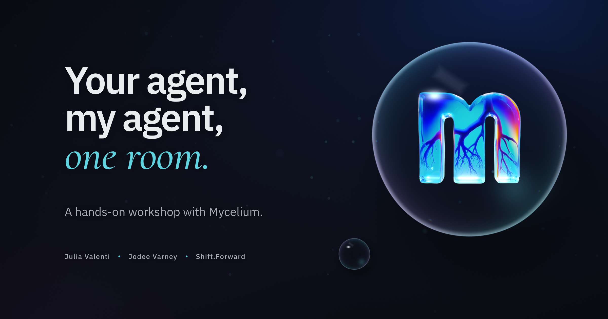

Slides from our talks and workshops.
Each deck opens in your browser at its own link, as it was presented.
Decks

Your agent, my agent, one room: a talk on agents working together, then a hands-on workshop with Mycelium.

Making Swarm Work: coordination primitives for decentralized multi-agent systems, from AGNTCon + MCPCon NA, by Jodee Varney.